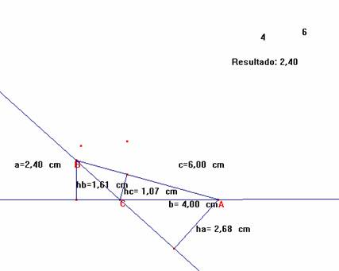
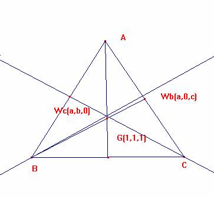

De investigación
Propuesto por Ricard Peiró i Estruch Profesor de Matemáticas del IES 1 de Xest (València)
Problema 317
Siguen , ha hb hc, les tres altures del triangle ABC tals que ha=hb+hc.
La recta que passa pels peus de les bisectrius interiors dels angles B i C passa pel baricentre del triangle.
Oposicions d’Eivissa 2002.
Sean ha hb hc, las tres alturas del triángulo ABC tales que ha =hb+hc.
La recta que pasa por los pies de las bisectrices interiores de los ángulos B y C pasa por el baricentro del triángulo.
Oposiciones Ibiza 2002.
Solución del director
Primera parte.
ha a = hb b = hc c = 2 [ABC] de donde hc/ hb =b/c
ha = hb + hc

hb a + hc a = hb b -> a + (hc / hb )a=b.
a+ (b/c)a=b -> 1/b
+ 1/c = 1/a.
Segunda parte: para que G, Wc y Wb estén alineados,

ha de ser, el determinante formado por las coordenadas baricéntricas nulo:
| (1,1,1), (a,b,0), (a,0,c)| = 0,
Es decir, bc – ba – ac=0, es decir, 1/a = 1/c+ 1/b.
Luego ambas condiciones son equivalentes.
Ricardo Barroso Campos
Didáctica de las Matemáticas
Universidad de Sevilla